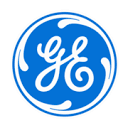

Industry Experience
High-fidelity computational research for global energy leaders.


Global R&D Lead
GE / BHGE (2013 onwards)
Architecture for Digital Twin systems. I led the development of slug-risk prediction modules using high-fidelity CFD models, allowing for real-time production optimization across multi-well assets.
Energy Research Scientist
Equinor, Norway (2009-2013)
Designed and supervised large-scale Heavy-Oil Rig Experiments. My research provided the field-facing design recommendations for offshore subsea separators and electrostatic coalescers used in Peregrino and Bressay.


Process Modeling Lead
Nofima & SINTEF, Norway
Specialized in Thermal Intensification via microwave and RF heating studies. Developed computational transport models to optimize energy efficiency in industrial processing systems.